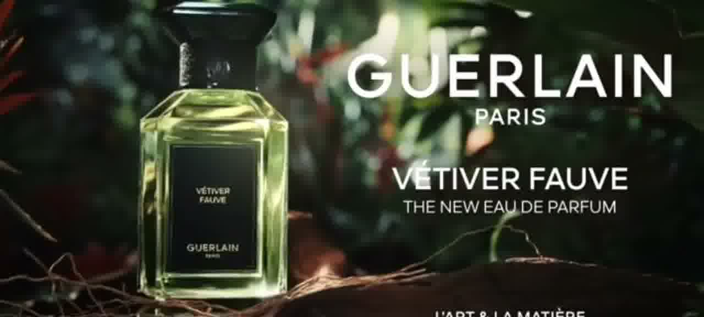

Into the Untamed Canopy
Dawn breaks over mist-veiled rainforest rivers, awakening an untamed green pulse.
L’ART & LA MATIÈRE
PARIS
Loading sequence · 0%
THE NEW EAU DE PARFUM
A chiaroscuro composition from Guerlain’s Haute Parfumerie collection—balancing crisp tropical vitality with deep, sun-warmed roots.
Dew-kissed botanical freshness that evokes the first sunlight piercing a rainforest canopy.
Vibrant, woody, and mineral-rich roots layered with smoky cypriol for unmistakable magnetic depth.
Velvety warmth and resinous amber undertones that linger smoothly on skin long after dusk.

Inspired by Guerlain’s historic 1870 Square Bottle, crafted from heavy beveled glass and crowned with a sleek black cap. Designed to be refilled and cherished endlessly.
100 mL · Signature Spray · Refillable